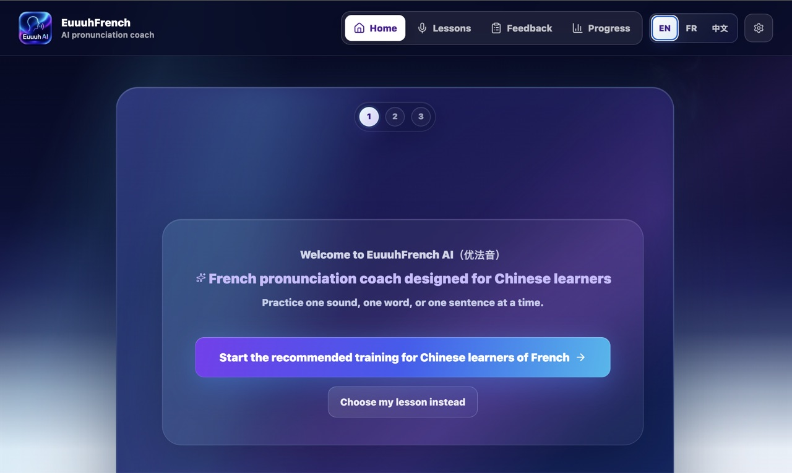
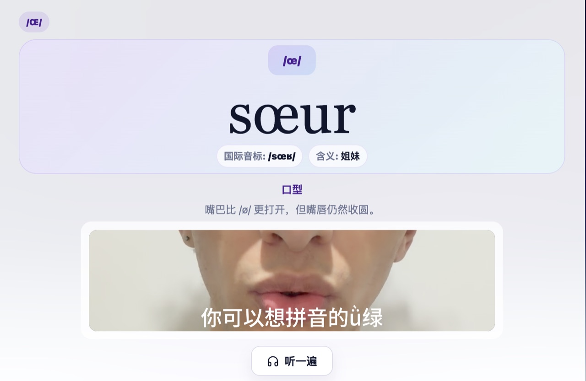

EuuuhFrench AI is an in-development AI-assisted French pronunciation tool. It is conceived, designed, and developed by Sifaks Ousmail for Chinese-speaking learners of French.
The project is part of SIFAKS © Software. It connects applied linguistics, language education, second language acquisition, and French as a foreign language.
The current version is close to an MVP. The main learning flow now works: learners can listen to native French audio, record their own pronunciation, replay their attempt, receive AI-assisted feedback, read correction guidance, and try again. The interface also works across English, French, and Simplified Chinese, with desktop and mobile layouts checked.

What changed in this update?
Recent work focused on simplifying the practice flow. Learners now follow a clearer step-by-step sequence for each word or sentence. The goal is to make the app easier to use, especially during repeated pronunciation attempts.
This update also added local mouth-shape video guidance for five French sounds: /y/, /ø/, /œ/, /ʁ/, and /ɛ̃/. These sounds are especially relevant for Chinese-speaking learners of French because they involve features such as lip rounding, vowel placement, nasal resonance, and uvular articulation.

The app now combines native French audio examples, learner recording replay, mouth-shape guidance, correction prompts, and API-backed pronunciation assessment. Feedback wording has also been refined so that unclear recordings receive more useful guidance rather than misleading scores.
The assessment layer has been improved around Speechace-related target detection and feedback reliability. This remains AI-assisted pronunciation feedback, not a claim of a proprietary AI model, and not a replacement for teaching.
Prototype status
EuuuhFrench AI is still an in-development prototype, not a fully launched commercial product. Recent updates focus on making the learning experience more concrete: video feedback, native French audio comparison, recording, replay, correction guidance, and clearer retry support.
The multilingual branding and interface have also been polished in English, French, and Simplified Chinese, including the EuuuhAI / 优法音 presentation used across the public software preview.
For now, the project can be seen as a bridge between applied linguistics research and language education design: a focused pronunciation tool for Chinese-speaking learners of French, built around concrete French pronunciation learning problems.